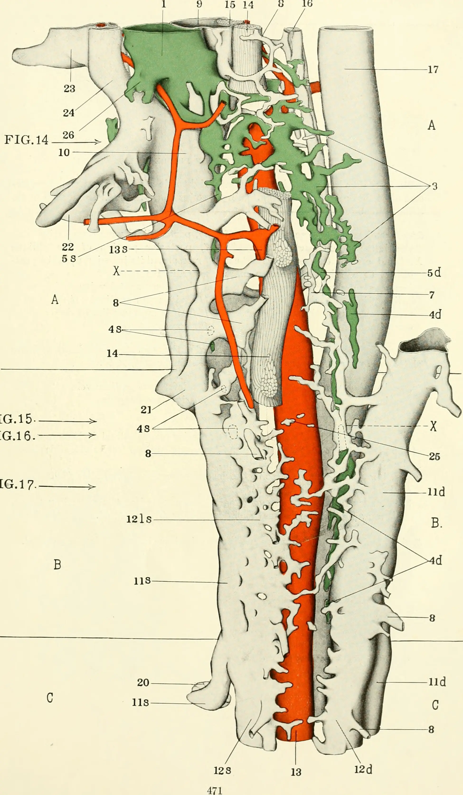

El cerebro, un monarca autoproclamado que cree gobernar desde su trono de hueso, es en realidad un rehén. Un consumidor minorista que depende completamente de la droga que se destila en su sótano. En la viscosa oscuridad del tracto digestivo, el intestino trafica la química que sostiene la mente. Es un mercado negro en el cual señales neurales, e inmunológicas son solo la moneda de cambio de una transacción que evita el colapso mental.
En este bajo mundo, los psicobióticos son los jefes químicos de una refinería orgánica, organismos vivos que, en dosis correctas, reprograman la psique. Estas bacterias cocinan directamente en el metabolismo, inyectando su mercancía como ácido gamma-aminobutírico (GABAPrincipal neurotransmisor inhibidor del sistema nervioso central en mamíferos, responsable de inducir la relajación y reducir la excitabilidad neuronal.) y obligando al intestino a fabricar serotonina que inunda el torrente sanguíneo. Son narcotraficantes del ánimo. Controlan nuestra voluntad con un compuesto que se destila en las sombras del vientre. Apresar al cerebro volviéndolo adicto a su propia calma, una hazaña de crimen organizado.
"No buscamos derrocar al cártel, sino infiltrar aliados a la refinería. Al final, la soberanía mental no es un milagro, sino un diseño."
La Aduana del Ácido
Un operativo milimétrico ejecutado por un cártel microscópico. Para que esta operación pueda poner en línea su laboratorio, deben cruzar la aduana más violenta del cuerpo, un abrasador baño de ácido proveniente del estómago. Es aquí donde las facciones del cártel utilizan sus métodos de contrabando. Los cocineros de GABA, dominados por cepas de Lactobacillus y BifidobacteriumGéneros de bacterias ácido-lácticas, fundamentales en la microbiota intestinal saludable y frecuentemente utilizadas como probióticos., cruzan la frontera al cubrirse de un escudo viscoso, una gruesa capa de exopolisacáridos que los protege de la corrosión del ácido.
Por otro lado, se encuentra la facción que no se ensucia las manos, los extorsionadores de serotonina, la clase Clostridia, haciendo gala de una naturaleza cruda. Son cepas esporuladas que utilizan su propia biología como un chaleco antibalas, encerrándose en una armadura inerte, casi indestructible que sobrevive a la destrucción. Con sus respectivas corazas, ambas facciones forman una mancha criminal que cruza la peligrosa aduana en completo silencio, esperando pacientemente llegar a la oscuridad del colon para comenzar su operación.
La Ruta del Contrabando
El narcomenudeo debe moverse rápido, sin esperar el permiso de la sangre para circular. Para llegar directo a su mejor cliente, el cártel utiliza una ruta de contrabando: el Nervio Vago, un cableado de alta tensión que conecta el vertedero intestinal con el búnker craneal. Este cableado permite que la transacción rinda frutos. La mercancía no viaja por los canales legales de la sangre, donde sería detenida por la barrera hematoencefálica, los operarios no envían una sustancia física; disparan señales eléctricas a través de este bypass. Una puerta trasera al adicto órgano, reprogramando su química. Es un tráfico obligado, recibiendo una dosis de calma a cambio de ceder su voluntad a los cocineros que operan en el sótano.

Placa anatómica clásica (1912) intervenida digitalmente. Dominio público.
El cerebro no es el dueño de la felicidad, mientras los cocineros GABA mantienen el sedante corriendo, la otra facción del cártel, Clostridia, se encarga de controlar las calles. Envían notas de extorsión, señales químicas agresivas que obligan a las células enterocromafinesCélulas neuroendocrinas situadas en el epitelio del tracto digestivo, responsables de sintetizar la mayor parte de la serotonina del cuerpo humano. a disparar la expresión de la enzima Tph1. El resultado es una producción a escala industrial que destila más del 90% de la serotonina de todo el cuerpo. Una vez procesada, esta inmensa cuota de mercancía abandona el intestino e inunda directamente el torrente sanguíneo. Las plaquetas son forzadas a convertirse en "mulas" transportando la serotonina por todo el sistema, una droga que circulando bajo su mando, controla la logística del imperio.
El Colapso del Imperio
Pero como todo gran imperio criminal, este sistema es frágil y susceptible al colapso. Esta caída del bajo mundo tiene un nombre: disbiosisDesequilibrio severo en la composición o función de la microbiota intestinal, frecuentemente asociado con cuadros inflamatorios sistémicos y alteraciones psiquiátricas.. Cuando el hospedero adopta una dieta saturada de grasas y azúcares, pero deficiente en fibra, los operarios mueren de hambre. O peor aún, se consumen antibióticos de amplio espectro, armas de destrucción masiva que arrasan con toda la organización. Sin el orden que imponían los capos de la calma, el intestino se sume en una guerra territorial sangrienta. Pandillas oportunistas y bacterias Gram-negativas toman el control, liberando fragmentos de sus paredes celulares como metralla química (LPS) que pone en alerta roja a las células de defensa.
Privado de su dosis de calma y bajo el asedio de la inflamación sistémica, se fragmenta la psique. Sin el cártel para estabilizar el sistema, el monarca pierde el control de su propio búnker, hundiéndose en la paranoia de la ansiedad y en el abismo de la depresión clínica. Pero el colapso no tiene por qué ser el acto final. Si el órgano líder es un rehén, la biotecnología es el operativo táctico que llega para restaurar el suministro. No buscamos derrocar al cártel, sino infiltrar aliados a la refinería. Al final, la soberanía mental no es un milagro, sino un diseño: la certeza de que siempre podemos elegir qué clase de química gobernará nuestro mundo desde la oscuridad del sótano.
Archivo y Referencias Bibliográficas
- Bravo, J. A., Forsythe, P., Chew, M. V., Escaravage, E., Savignac, H. M., Dinan, T. G., Bienenstock, J., & Cryan, J. F. (2011). Ingestion of Lactobacillus strain regulates emotional behavior and central GABA receptor expression in a mouse via the vagus nerve. Proceedings of the National Academy of Sciences, 108(38), 16050–16055. https://doi.org/10.1073/pnas.1102999108
- Cryan, J. F., & Dinan, T. G. (2012). Mind-altering microorganisms: the impact of the gut microbiota on brain and behaviour. Nature Reviews Neuroscience, 13(10), 701–712. https://doi.org/10.1038/nrn3346
- Dinan, T. G., Stanton, C., & Cryan, J. F. (2013). Psychobiotics: A novel class of psychotropic. Biological Psychiatry, 74(10), 720–726. https://doi.org/10.1016/j.biopsych.2013.05.001
- Gomaa, E. Z. (2020). Human gut microbiota/microbiome in health and diseases: a review. Antonie van Leeuwenhoek. https://doi.org/10.1007/s10482-020-01474-7
- Strandwitz, P. (2018). Neurotransmitter modulation by the gut microbiota. Brain Research, 1693, 128–133. https://doi.org/10.1016/j.brainres.2018.03.015
- Yano, J. M., Yu, K., Donaldson, G. P., Shastri, G. G., Ann, P., Ma, L., Nagler, C. R., Ismagilov, R. F., Mazmanian, S. K., & Hsiao, E. Y. (2015). Indigenous bacteria from the gut microbiota regulate host serotonin biosynthesis. Cell, 161(2), 264–276. https://doi.org/10.1016/j.cell.2015.02.047